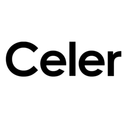

Liquidity routing
Chainspot's liquidity routing docs say the system queries connected DEXs, bridges, and routers, then assembles a path for same-chain or cross-chain swaps. Provider choice, token support, and inventory can change the result.
Chainspot — Compare cross-chain swap and bridge routes while reviewing liquidity providers, fees, timing, and wallet risk.
Live preview — open Chainspot to bridge.
Chainspot asks for the source chain, destination chain, token, amount, and wallet details, then assembles available routes from connected liquidity providers. The final quote is the important object to review before signing.
Chainspot is a router over external liquidity and bridge infrastructure, so the selected path defines much of the user risk. Read the route, not only the headline output.
Chainspot's liquidity routing docs say the system queries connected DEXs, bridges, and routers, then assembles a path for same-chain or cross-chain swaps. Provider choice, token support, and inventory can change the result.
The official architecture notes that core business logic for user funds is handled through smart contracts while off-chain modules assemble routes and calldata. Read the architecture overview to understand the on-chain and off-chain split.
Chainspot documents multiple audit reports and a security approach covering smart contracts, aggregation modules, and cross-chain messaging components. Start with the official security approach, then review the specific provider selected in your route.
There is no single Chainspot fee or universal arrival time. The cost and timing depend on the selected route, gas conditions, token approvals, bridge design, and destination network requirements.
Expect network gas, approval gas when needed, bridge or liquidity-provider costs, route spread, and any displayed protocol or partner fee. Chainspot's monetization docs show that integrations may include configurable commission logic.
Chain and token availability is route-specific. The official ecosystem page lists supported chains, bridges, DEX categories, and routers, but the live quote still decides whether a specific pair is available.
Cross-chain transfers can expose users to smart-contract risk, bridge-verifier risk, liquidity risk, wrong-network deposits, and phishing. Ethereum.org's bridge overview is a useful neutral primer before moving meaningful funds.
Use these checks before signing a Chainspot swap or bridge route.
Start from the canonical site Verify
Open Chainspot from the official domain or docs, then verify the app URL before connecting a wallet. Avoid search ads and direct-message links.
Open ↗Where funds leave Network
Confirm the wallet network, input token contract, and gas asset before approving. A wrong source network can create a failed or unusable route.
Docs ↗Where assets arrive Receive
Check that the receiving wallet supports the destination network and token representation. Token names can match while contract addresses differ.
Docs ↗Bridge, DEX, or router Route
Read the route provider before signing. Each bridge or router can have different security assumptions, liquidity, timing, and claim behavior.
Docs ↗Token approval scope Wallet
Approve only what the transaction requires when possible. After the route is complete, review allowances if the wallet or token is sensitive.
Docs ↗Follow transfer state Monitor
Track the transaction until the output asset is delivered or the interface shows a required follow-up. Do not assume every cross-chain flow settles the same way.
Docs ↗Chainspot routes can involve multiple networks and providers, so these references help identify what is underneath a quote.
Routing engine and API Core
Use this as the Chainspot layer that creates route data for swaps and integrations. For developers, the API docs explain transaction creation and status requests.
Docs ↗Bridge listings and analytics Research
Use the portal to research bridges and chain coverage before choosing a route. Portal data is informational and should be checked against the live quote.
Open ↗Integrated bridge option Bridge
Stargate may appear as a route provider where supported. Review the exact Chainspot quote and Stargate documentation for the selected asset path.
Docs ↗Intent-style bridge option Bridge
Across routes can be useful when available for a token and chain pair. Confirm provider costs, output token, and destination chain before signing.
Docs ↗
Cross-chain bridge option Bridge
cBridge is one of the bridge providers users may research when Chainspot surfaces a compatible route. Read provider assumptions before moving funds.
Docs ↗Cross-chain swap provider Swap
Symbiosis can support cross-chain swap-style flows. If it appears in a route, check the output token and chain-specific liquidity details.
Docs ↗Chainspot aggregates paths instead of making every transfer use one bridge design. Its liquidity routing docs describe connections to DEXs, bridges, and routers.
| Route type | What to check | Typical fit |
|---|---|---|
| Bridge route | Provider, verifier model, liquidity, gas, destination token | Moving the same asset across chains |
| Cross-chain swap | Bridge leg, swap leg, price impact, output contract | Receiving a different token on another chain |
| On-chain swap | DEX path, slippage, approval, token contract | Swapping assets within one network |
| API integration | Route creation, status checks, fee settings, compliance needs | Wallets, apps, or fintech products adding routing |